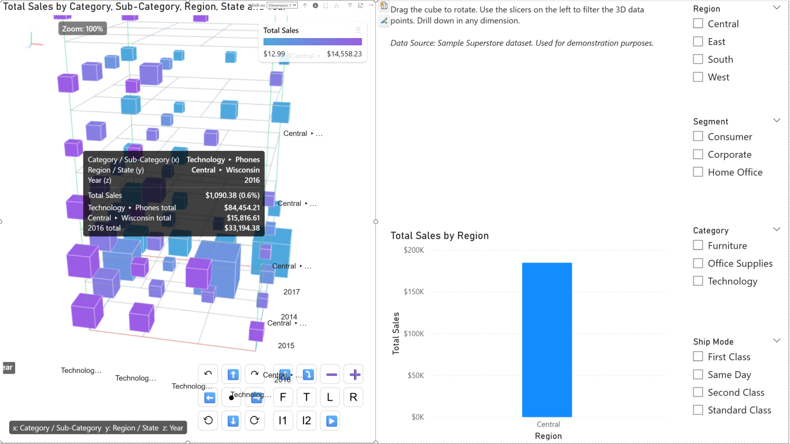

1. Introduction
Welcome to the comprehensive tutorial for the Data Cube 3D Power BI Custom Visual. This visual is designed to render three categorical dimensions (X, Y, Z) as an interactive 3D grid of cubes. The magnitude of your measure is encoded by the height, volume, and color of each individual cube.
Key Features:
- High Performance: Uses instanced rendering to efficiently draw thousands of cubes.
- Crisp SVG Labels: Axis badges and tick labels remain sharp at any zoom level, complete with back-face hiding to prevent rear labels from showing through.
- Interactive 3D Controls: Smooth rotation, panning, and zooming using either the mouse or the intuitive on-screen control panel.
- Rich Tooltips: Detailed tooltips displaying member totals (e.g., "Technology total") with support for Report Page Tooltips.
- Extensive Customization: Configure legends, color modes (sequential, diverging, categorical), cube borders, inner grids, and much more via the formatting pane.
2. Getting Started
Data Roles Mapping
To populate the Data Cube 3D visual, you need to map your dataset fields to the following data roles in the Visualizations pane:
| Data Role |
Type |
Description |
| Dimension 1 (X-axis) |
Grouping |
The first categorical dimension (e.g., Category). |
| Dimension 2 (Y-axis) |
Grouping |
The second categorical dimension (e.g., Region). |
| Dimension 3 (Z-axis) |
Grouping |
The third categorical dimension (e.g., Year). |
| Value |
Measure |
The numeric value that determines the size/color of the cube (e.g., Total Sales). |
| Tooltips |
Measure |
Additional data fields to display when hovering over a cube. |
Note on Hierarchy: The visual supports drill-down capabilities. You can place multiple fields into Dim 1, Dim 2, or Dim 3 to enable hierarchical exploration (e.g., Category > Sub-Category).

[Reference: Screenshot01.png - Showing the basic 3D cube structure mapping Category, Region, and Year to Total Sales]
Figure 1: Data Cube 3D visual mapping three dimensions and a measure. Notice the on-screen control panel at the bottom right.
3. Interaction and Controls
The Data Cube 3D visual offers rich interactive capabilities to help users explore multidimensional data effectively.
Mouse Controls
- Rotate (Orbit): Left-click and drag anywhere on the visual background.
- Zoom: Use the mouse scroll wheel.
- Pan: Hold
Shift + Left-click and drag.
- Select: Click on a specific cube to cross-filter other visuals on the report page.
- Multi-Select: Hold
Ctrl (or Cmd on Mac) and click multiple cubes.
On-Screen Control Panel
If enabled in the formatting settings, a control panel appears overlaying the visual. It includes buttons for precise camera control:
RotationYaw Left/Right, Roll Left/Right, Pitch Up/Down
PanningPan Up/Down/Left/Right
Zoom & ResetZoom In/Out, Center View
Preset ViewsFront, Top, Left, Right, Preset 1, Preset 2
AnimationStart/Pause Auto Rotate
4. Formatting Options Deep-Dive
The visual provides an extensive Formatting Pane to tailor the look and feel perfectly to your report's theme. Here is a detailed breakdown of the available settings cards:
4.1 Cube Settings
- Scale Mode: Choose how values dictate cube size:
- Height bars (Default): Cubes grow vertically based on value.
- Equal-sized cubes: All cubes are the same size; value is only represented by color.
- Uniform 3D scaling: Cubes scale proportionally in all 3 dimensions based on value.
- Cell Size & Gap: Control the base footprint of the cubes and the spacing between them in the grid.
- Height Scale: A multiplier to exaggerate or reduce the vertical height of the bars.
- Opacity: Adjust the transparency of the cubes (0 to 1).
- Show Control Panel: Toggle the visibility of the on-screen camera controls.
4.2 Colors Settings
Define how the data points are colored:
- Color Mode:
- Sequential: Interpolates between Min and Max colors based on the Value measure.
- Diverging: Interpolates between Min, Mid, and Max colors.
- Categorical (by Z): Assigns colors based on the categorical items in the Z-axis (Dimension 3).
- Color by Z Index: If enabled, categorical coloring relies on the index of the Z dimension.
4.3 Labels & Axes Settings
Crucial settings for readability and chart comprehension:
- Render as SVG: Keeps text crisp regardless of how far you zoom in. Features back-face hiding to reduce visual clutter.
- Axis Label Options: Customize the font size, text color, background color, and background opacity of the X/Y/Z axis title badges.
- Show Inner Grids: Toggles the wireframe grid layers between the cubes to help visually align data points across dimensions.
- Show Orientation Gizmo: Displays a small XYZ axis indicator (usually in the top left) to help maintain spatial awareness while rotating.
4.4 Borders & Advanced Settings
- Show Cube Borders: Draws lines along the edges of the cubes. You can customize the border width, color, and opacity.
- Sort Order: Determines how items along the axes are sorted.
- By totals (desc): Sorts categories based on their total aggregated value.
- By key (asc): Sorts alphabetically or numerically based on the dimension names.
- Top N Settings: To maintain performance and visual clarity with large datasets, you can limit the number of items rendered per dimension (Top Dim 1, Top Dim 2, Top Dim 3). Default is 10 per axis.
- Volume Linear (Cube-root): When enabled, the visual applies a cube-root scale to the values before sizing the cubes, ensuring that the visual volume accurately reflects the underlying data proportion.

[Reference: Screenshot02.png - Showing the rich default tooltip displaying breakdown of hierarchical data (Category/Sub-Category) and totals]
Figure 2: Rich tooltips displaying hierarchical paths and granular totals. Note the grid lines aiding spatial alignment.
5. Tooltips and Analysis
Hovering over any cube reveals a detailed, natively styled Power BI tooltip.
Default Tooltip Content
By default, the tooltip provides immense context:
- The specific path for the X, Y, and Z dimensions (e.g.,
Technology ▸ Phones).
- The explicit Value for that specific intersection.
- The percentage that value represents of the Grand Total.
- Subtotals: The tooltip automatically calculates and displays the total values for each specific dimension member intersecting at that cube (e.g., "Technology total", "2016 total"). This can be toggled off in Advanced → Show totals in tooltip.
Report Page Tooltips
The Data Cube 3D visual fully supports Power BI Report Page Tooltips. To enable this:
- Create a new tooltip report page in Power BI Desktop.
- In the visual's Formatting Pane, navigate to the Tooltip card.
- Toggle on Use report page tooltip. The visual will now delegate hovering events to the standard Power BI engine to render your custom page.
6. Best Practices & Performance Notes
- Data Volume: While the visual uses high-performance instanced geometry, mapping thousands of distinct categories across all three axes will eventually impact rendering speed and readability. Utilize the Top N settings in the Advanced card to focus on the most important data.
- Color Contrast: When using the SVG Labels, ensure the Axis label background color contrasts well with the overall report background, and adjust the Axis text color accordingly.
- Drill-down: When using hierarchies (multiple fields in a single dimension), utilize the "Key separator" option in the Cube settings card (▸, /, or >) to format how paths are displayed in tooltips and labels cleanly.
- Equal Cubes vs Height Bars: Use "Equal-sized cubes" combined with a Diverging color scale when you want to create a 3D Heatmap effect, emphasizing variance through color rather than physical size.
Tutorial prepared for Microsoft Power BI Custom Visual Certification.